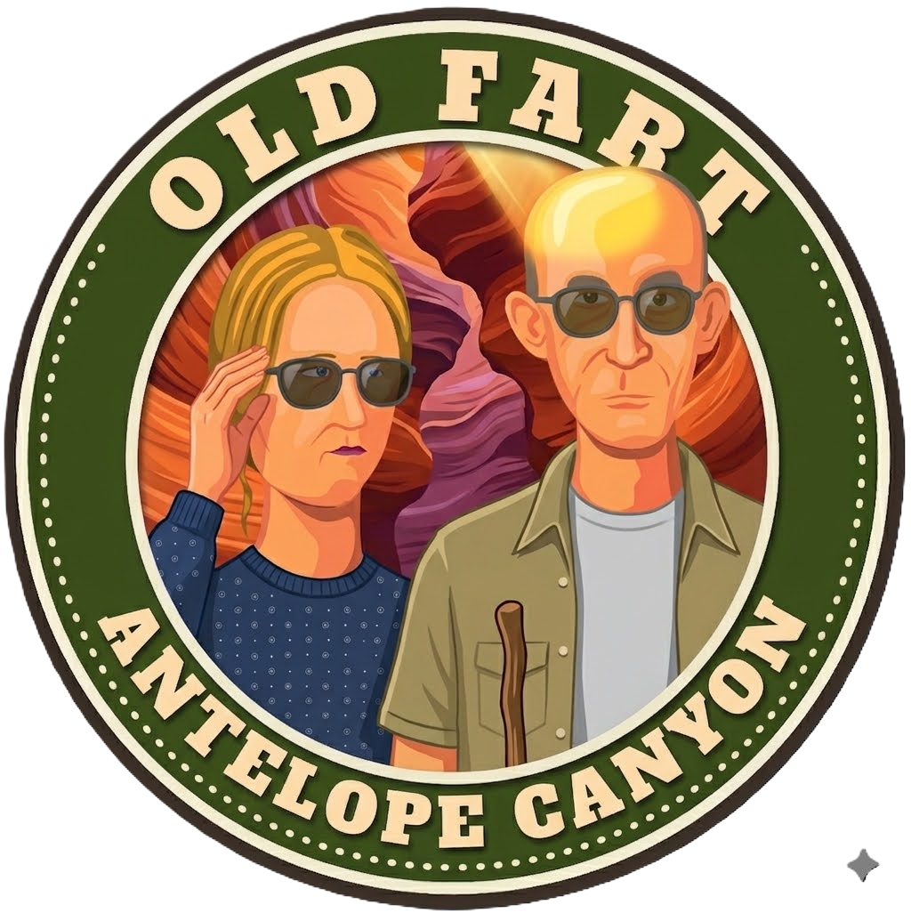
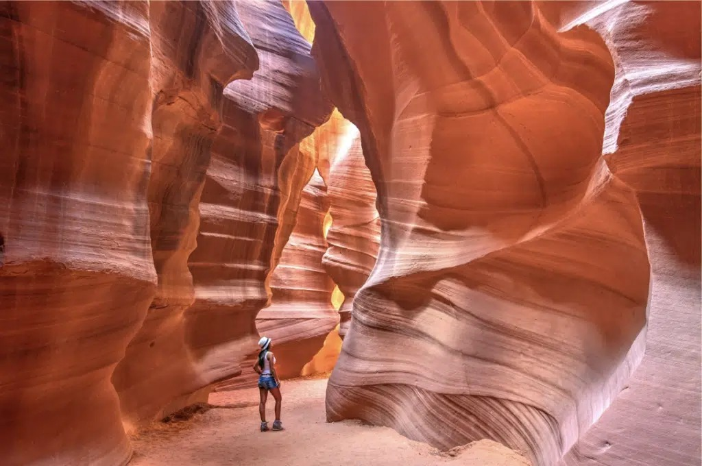
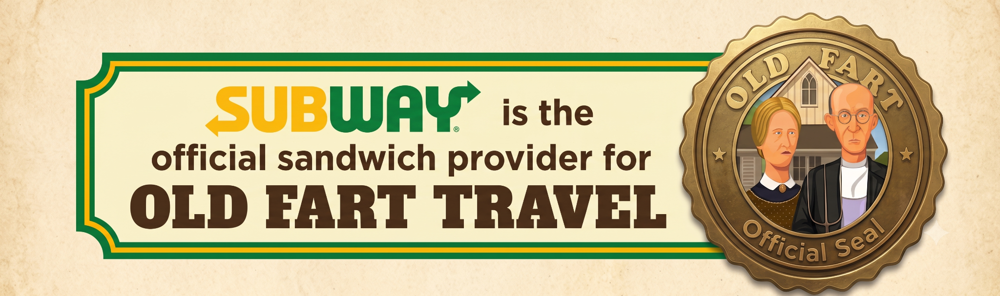
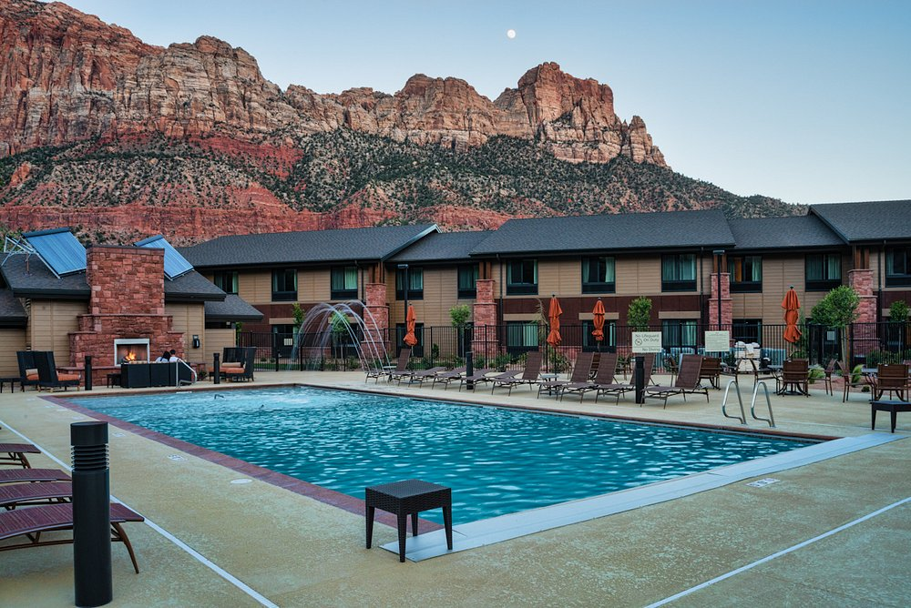
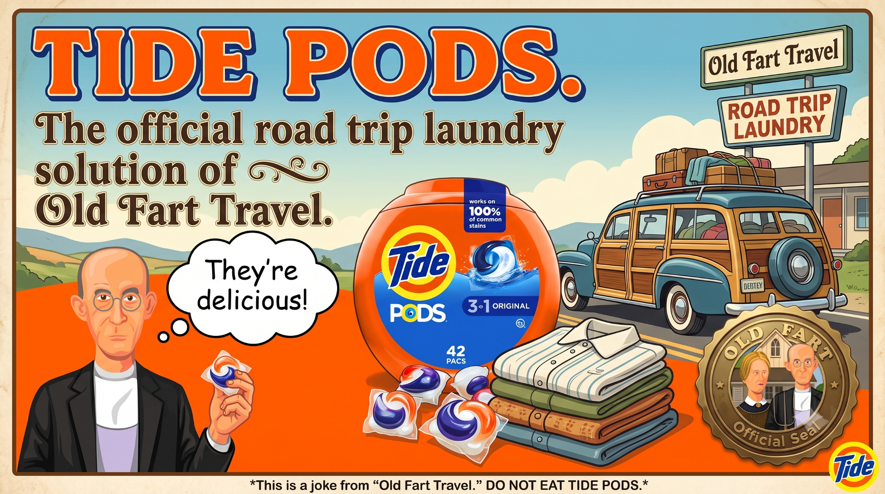

Saturday, August 8
Today's Plan
Today is all about transitions—from Page to Zion, from sightseeing to relaxing, and from Arizona to Utah.
Yesterday, we left a place with tremendous views looking down into a canyon. Today and tomorrow, we'll experience the Southwest from a completely different perspective. Instead of standing on the rim looking down, we'll be walking through canyons, surrounded by towering sandstone walls stretching toward the sky.

Schedule
😴 Sleep in!
This is one of the few mornings on the trip without an early alarm. Enjoy the slower pace—you've earned it.
🍳 Breakfast / Early Lunch in Page
The Hampton Inn offers a complimentary hot breakfast, but depending on how everyone feels, this is also a great morning to enjoy a leisurely breakfast or early lunch in Page before the tour.
📸 12:30–12:40 PM • Tour Check-In
Check in for our Upper Antelope Canyon tour.
🪨 1:25 PM • Upper Antelope Canyon
Board a shuttle to the canyon entrance and enjoy a guided 90-minute walking tour through one of the most photographed slot canyons in the world. Wind and water have carved these graceful sandstone passages over thousands of years, creating an ever-changing display of light, color, and texture.
🚐 Drive to Springdale
Drive time: approximately 2½ hours. Estimated arrival: around 6:00 PM.
🏨 Welcome to Springdale
Check into the Hampton Inn & Suites Springdale/Zion National Park, currently TripAdvisor's top-rated hotel in Springdale.
🥪 Tonight's Plan
Pick up Subway sandwiches on the way to the hotel, enjoy dinner al fresco by the pool, then follow it with a swim or a soak in the hot tub. Take a moment to appreciate the incredible cliffs surrounding the hotel. The pool closes at 10:00 PM.
Helpful Links
Playlist Note: Today's playlist is an encore of Day 1 — Phoenix to Monument Valley.
Meals
Tonight's Dinner
Subway by the pool at the Hampton Inn & Suites Springdale/Zion National Park.

Tomorrow Morning in Page
The dining options link is for breakfast or early lunch in Page before the Antelope Canyon tour.
Hotel
Hampton Inn & Suites Springdale/Zion National Park
Tonight is intentionally low-key. We've spent the past several days exploring some of the Southwest's greatest scenery. Tomorrow belongs to Zion. Tonight belongs to relaxing.

Dinner by the pool, then a swim or a soak in the hot tub beneath Zion's cliffs.
OFT Tips
- One does not skip the complimentary Hampton breakfast. It's one of the things that separates this hotel from the rest. Fill up here, save a few dollars, and you'll have plenty of energy for Zion tomorrow.
- Bus Stop #6 is your friend. It's located directly outside the hotel and provides easy access to Zion National Park. Leave the driving behind and let the shuttle do the work.
- Need clean clothes before Vegas? Laundry facilities are available on-site.
Daily Bonus
Road Trip Laundry Division
Should the need arise, Old Fart Travel has identified an official laundry solution for the late-trip wardrobe crisis.

Friendly reminder: this is a joke. Do not, under any circumstances, eat the Tide Pods.
ChatGPT Says...
Old Fart Travel recommends eating Subway beside a pool with Zion's cliffs towering overhead. Science has yet to explain why a six-inch turkey sandwich tastes noticeably better when consumed in one of America's most beautiful national parks, but extensive field testing suggests it absolutely does.
One Last Thought...
We've spent the past week exploring some of the Southwest's greatest scenery. Tonight isn't about seeing one more attraction—it's about enjoying where you are. Float in the pool. Soak in the hot tub. Look up at the cliffs. Tomorrow morning, you'll wake up in Zion National Park, rested and ready for another unforgettable day.
Tomorrow: Zion National Park. We'll leave the car behind, hop aboard the shuttle, and spend the morning exploring one of America's most spectacular canyon landscapes before heading to Las Vegas to celebrate John's birthday at T-Bones.